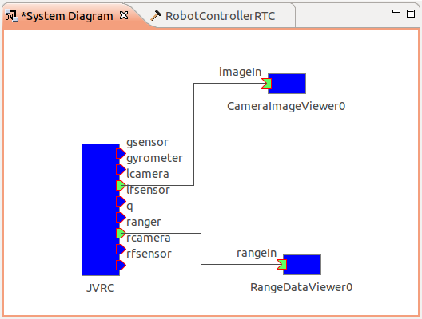

センサの接続¶
ここではJVRCモデルに搭載された各種センサのデータを取得できるようにします。
プロジェクトを開く¶
[メニュー]-[プロジェクトの読み込み]から 前節のチュートリアルで作成したプロジェク トファイル、sample3.cnoidを読み込みます。もしくは「サンプルファイルのインス トール」でダウンロードしたリポジトリの「samples/tutorials/cnoid/sample3.cnoid」でも結構です。
JVRC モデルのセンサ¶
JVRC-1 モデルに搭載されているセンサは、テキストエディタで「samples/tutorials/JVRC-1/main.wrl」ファイルを開くと確認することができます。 モデルファイルを開くと次のように記述されており、加速度センサ gsensor とジャイロセンサ gyrometer が搭載されていることがわかります。
DEF JVRC Humanoid {
humanoidBody [
DEF PELVIS Joint {
jointType "free"
translation 0 0 0.854
children [
DEF PELVIS_S Segment {
mass 10
centerOfMass -0.01 0 0.034
momentsOfInertia [0.08958333333333333 0 0 0 0.08958333333333333 0 0 0 0.11249999999999999]
children [
DEF gsensor AccelerationSensor {
sensorId 0
}
DEF gyrometer Gyro {
sensorId 0
}
Inline { url "pelvis.wrl" }
]
}
他にも、力センサ rfsensor, lfsensorが搭載されていることが分かります。
DEF rfsensor ForceSensor {
sensorId 0
}
DEF lfsensor ForceSensor {
sensorId 1
}
カメラ rcamera, lcamera、距離センサ ranger も確認することができます。
DEF NECK_P Joint {
jointType "rotate"
jointAxis "Y"
jointId 17
ulimit [1.0471975511965976] #+60
llimit [-0.8726646259971648] #-50
uvlimit [ 5.75958]
lvlimit [-5.75958]
rotorInertia 0.0596
children [
DEF NECK_P_S Segment {
mass 2
centerOfMass 0.01 0 0.11
momentsOfInertia [0.00968 0 0 0 0.00968 0 0 0 0.00968]
children [
Inline { url "head.wrl" }
]
}
DEF rcamera VisionSensor {
translation 0.1 -0.03 0.09
rotation 0.4472 -0.4472 -0.7746 1.8235
frontClipDistance 0.05
width 640
height 480
type "COLOR"
sensorId 0
fieldOfView 1.0
}
DEF lcamera VisionSensor {
translation 0.1 0.03 0.09
rotation 0.4472 -0.4472 -0.7746 1.8235
frontClipDistance 0.05
width 640
height 480
type "COLOR"
sensorId 1
fieldOfView 1.0
}
DEF ranger RangeSensor {
translation 0.1 0.0 0.0
rotation 0.4472 -0.4472 -0.7746 1.8235
sensorId 0
scanAngle 1.5707963267948966
scanStep 0.011344640137963142
scanRate 100
minDistance 0.1
maxDistance 30.0
}
]
} # NECK_P
各センサのデータタイプは次のページに記載されています。
加速度センサの値は要素数3のTimedDoubleSeq型になります。それぞれの方向の並進加速度が格納されています。
ジャイロセンサの値は要素数3のTimedDoubleSeq型になります。三次元ベクトルの角速度が格納されています。
力センサの値は要素数6のTimedDoubleSeq型になります。3次元ベクトルの力と3次元ベクトルのトルクが格納されています。
カメラの値はImg::TimedCameraImage型になります。
https://github.com/s-nakaoka/choreonoid/blob/master/src/OpenRTMPlugin/corba/CameraImage.idl
Img::TimedCameraImageの型の定義は以下のようになっています。
enum ColorFormat
{
CF_UNKNOWN, CF_GRAY, CF_RGB,
CF_GRAY_JPEG, CF_RGB_JPEG // local extension
};
struct ImageData
{
long width;
long height;
ColorFormat format;
sequence<octet> raw_data;
};
struct CameraImage
{
RTC::Time captured_time;
ImageData image;
CameraIntrinsicParameter intrinsic;
Mat44 extrinsic;
};
struct TimedCameraImage
{
RTC::Time tm;
CameraImage data;
long error_code;
};
width x heightの各ピクセルの色情報が1ピクセル当たりformatとしてdata.image.raw_date部分に格納されます。 今回のカメラの場合、width = 640, height = 480と定義されているので、640x480のデータとなります。
距離センサの値はRangeData型になります。
typedef sequence<double> RangeList;
struct RangeData
{
/// Time stamp.
Time tm;
/// Range values in metres.
RangeList ranges;
/// Geometry of the ranger at the time the scan data was measured.
RangerGeometry geometry;
/// Configuration of the ranger at the time the scan data was measured.
RangerConfig config;
};
シーケンスに計測方向に向かって右からスキャンした距離データが格納されています。 距離の値は何かに干渉が発生する限り出力されますが、干渉がない場合は0になります。
カメラ、距離センサの有効化¶
シミュレーションにおいてカメラや距離センサを有効にするため、以下の作業を行います。
アイテムビューで「AISTSimulator」を選択し、「新規」より「GL視覚センサシミュレータ」を選択し、「GLVisionSimulator」という名前で追加します。

注釈
「対象ボディ」プロパティおよび「対象センサ」プロパティを空のままにしておくと、シミュレーション世界に存在するすべてのセンサがシミュレートされます。一方でこれらのプロパティを下図のように設定するとシミュレートするセンサを限定することができ、シミュレーション速度を向上させることができます。この例ではJVRCのrangerのみをシミュレーション対象としているため、頭部のカメラはシミュレートされないことになります。

BodyRTCの設定ファイル¶
これまではChoreonoidの自動設定の機能を用いてRTCのポートを生成していました。 しかし、これはサンプル実行用のもので、単純なRTCのポート定義にしか使えません。
今回のロボット用のRTCは複雑なので、設定ファイルを用いて各種ポートを定義する必要があります。次のような設定ファイルを用意し、ファイル名を「RobotSensorsJVRC.conf」とします。これを「/usr/lib/choreonoid-1.5/rtc/」ディレクトリに置いておきます。
out-port = q:JOINT_VALUE
out-port = gsensor:ACCELERATION_SENSOR
out-port = gyrometer:RATE_GYRO_SENSOR
out-port = lfsensor:FORCE_SENSOR
out-port = rfsensor:FORCE_SENSOR
out-port = rcamera:rcamera:CAMERA_IMAGE
out-port = lcamera:lcamera:CAMERA_IMAGE
out-port = ranger:RANGE_SENSOR
in-port = u:JOINT_TORQUE
connection = q:RobotControllerRTC0:q
connection = u:RobotControllerRTC0:u
out-portとは、RTCの出力ポートの定義です。「ポート名：型」の形式で定義します。
in-portは入力データポートの定義を意味します。
connectionとはRTCのポート接続の設定となります。例えば、「q:RobotControllerRTC0:q」とはこのRTCのポートqとRobotControllerRTC0コントローラとの接続設定になります。
この設定ファイル記述法の詳細は次のページに記載されています。

ビューアコンポーネントの起動・接続¶
ターミナルを2つ開き、それぞれ次のコマンドを実行します。CameraImageViewerCompはカメラ画像を受け取って表示するRTC、RangeDataViewerCompはレンジセンサの距離データを受け取って表示するRTCです。
$ CameraImageViewerComp
$ RangeDataViewerComp
RTSystemEditorを起動してName Service Viewを確認すると、CameraImageViewer0、RangeDataViewer0というRTCが見つかるはずです。これらをSystem Diagramにドラッグアンドドロップし、次図のようにデータポートを接続します。
シミュレーションを実行する¶
シミュレーションを開始すると、ウィンドウが2つ現れ、それぞれロボットに搭載されたカメラからの画像とレンジデータが計測した距離情報が表示されます。
サンプルプロジェクトについて¶
このサンプルのプロジェクトファイルは「モデルファイルのインストール」でダウンロードしたリポジトリの「samples/tutorials/cnoid/sample4.cnoid」に保存されています。